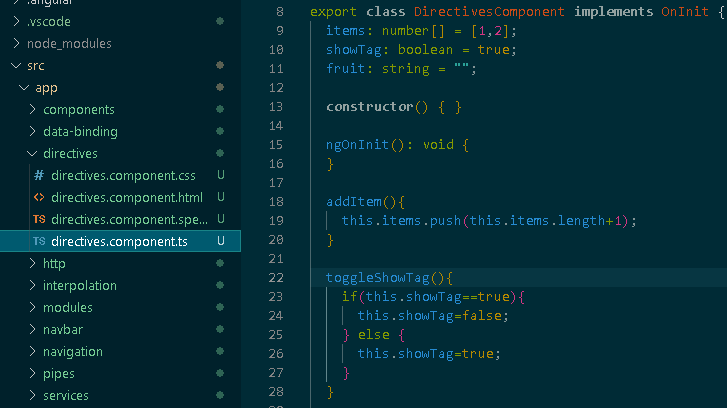

There are three major kinds of directives: Components, Attribute Directives and Structural Directives.
Components themselves are directives, called upon by including the selector in another template.
The built in attribute directives include: NgModel, NgStyle and NgClass. NgModel is used in two way binding as discussed under data binding. NgClass and NgStyle allow you to apply multiple css classes or inline styles respectively from the model.
The most useful directives are the built in structual directives, including: NgFor, NgIf and NgSwitch
For the examples in this section we will exclusively cover structural directives. The following is the model used in this section: 
Including the NgFor directive in a tag allows you to duplicate the tag once for each item in a list. Updating the list will update the display in real time.
In the following example, we have a div that displays integers in a list.
Including the NgIf directive in a tag allows you to hide or display a tag based on the value of a boolean attribute.
In the following example, we have a div that appears or disappears based on the value of the showTag attribute.
Including the NgSwitch and NgSwitchCase directives in your template allow you to select one of multiple tags to display based on the value of an attribute.
In the following example, we have 3 divs that can be displayed based on the value of the input. The tag with ngSwitchDefault is displayed if the attribute doesn't match one of the expected values.